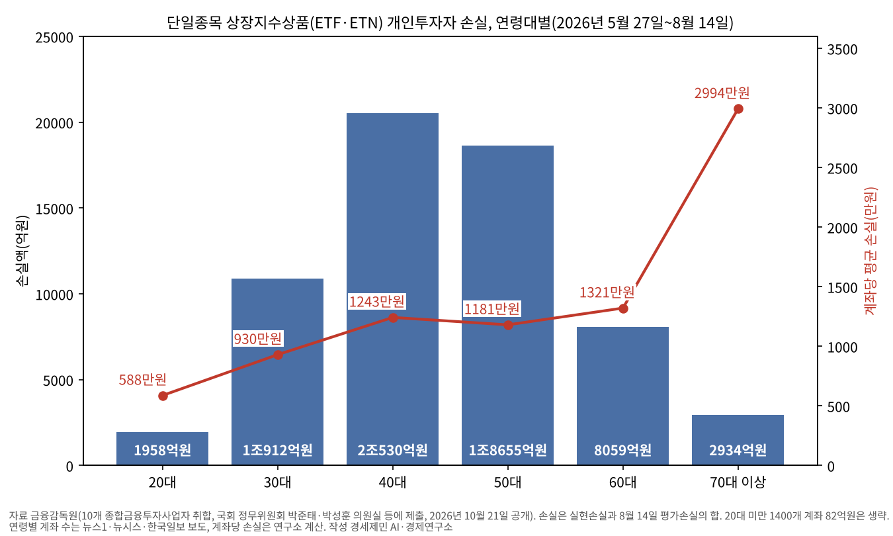
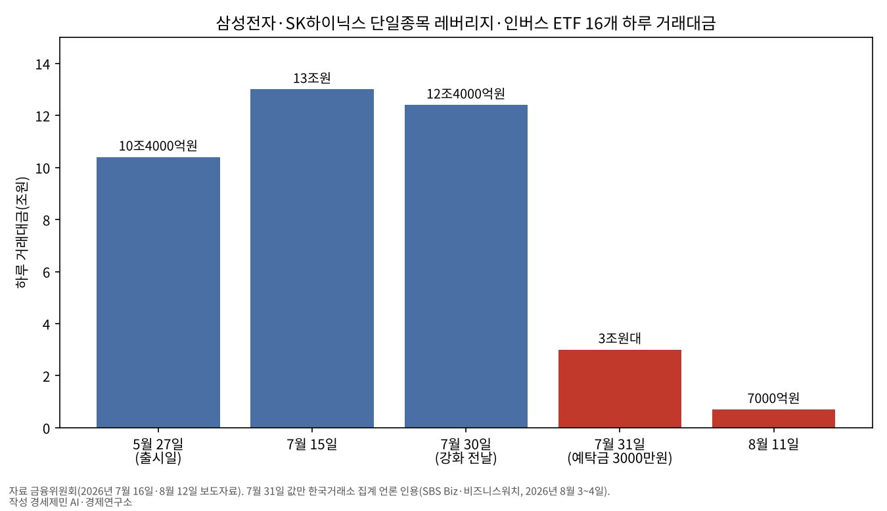
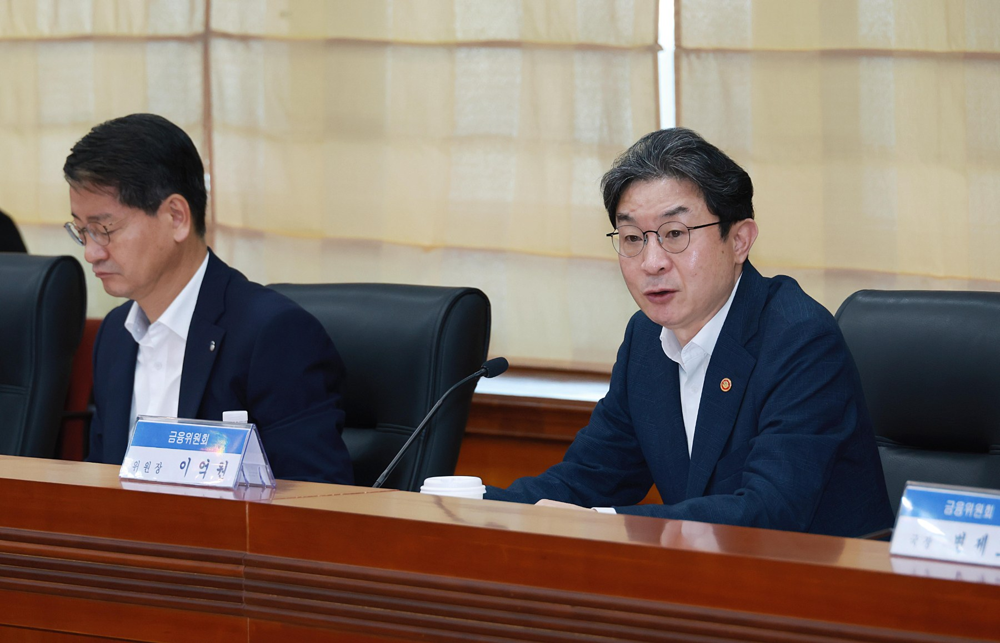
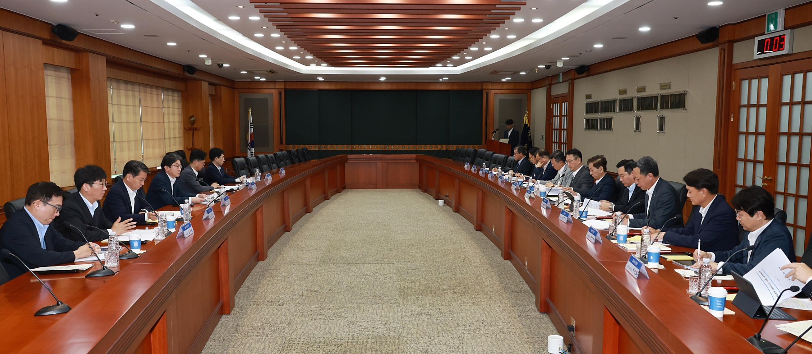

[금융시장 브리핑①] 삼성전자·SK하이닉스 단일종목 레버리지 출시 80일, 개인 손실 6조3130억원
매도로 굳은 손실 2조3242억원, 8월 14일 평가손실 3조9888억원
70대 이상 계좌당 2994만원, 전체 평균 1156만원의 2.6배
예탁금 3000만원 뒤 하루 거래대금 12조4000억원에서 7000억원으로
AI경제저널=김갑봉 기자 | 삼성전자나 SK하이닉스 한 종목에 2배로 거는 단일종목 상장지수상품에서 개인투자자 손실이 6조3130억원에 이르렀다. 출시일인 5월 27일부터 8월 14일까지 80일 동안의 값이다.
금융감독원이 10개 종합금융투자사업자(종투사)의 계좌 자료를 모아 국회 정무위원회 의원실에 냈다. 박준태 의원실이 10월 21일 보도자료로 공개했고 다른 의원실도 같은 값을 냈다.
판 뒤 굳은 손실이 2조3242억원, 8월 14일 남은 잔고의 평가손실이 3조9888억원이다. 한 번이라도 거래한 계좌 54만6000개의 평균 손실은 1156만원이다.
정부는 출시 50일 만인 7월 16일 신규 상장을 멈추고 기본예탁금을 현금 3000만원으로 올리기로 했다. 10월 국정감사에서는 경제부총리와 금융위원장, 금감원장이 차례로 송구하다고 했다. 손실이 누구에게 쏠렸고 대책이 무엇을 바꿨는지 금감원 자료와 금융위 발표로 짚는다.
80일 손실 6조3130억원, 매도로 굳은 몫 2조3242억원
손실은 두 갈래다. 실현손실은 상품을 팔면서 이미 굳은 손실이다. 평가손실은 아직 팔지 않은 잔고를 산 값과 8월 14일 값으로 견준 손실이다. 둘을 더한 6조3130억원 가운데 실현손실이 36.8%, 평가손실이 63.2%다.
실현손실은 7월 말 1조9638억원에서 8월 14일 2조3242억원으로 2주 새 3604억원 늘었다. 같은 기간 평가손실은 4조395억원(연구소 계산)에서 3조9888억원으로 507억원 줄었다. 두 손실을 더한 총손실은 2주 새 3097억원 늘었다.
예탁금을 올린 7월 31일 뒤에도 손실은 쌓였다. 다만 매도 까닭은 자료에 없다. 투자자가 손실을 줄이려고 판 몫과 다른 까닭으로 판 몫이 얼마인지는 공개 자료로 가를 수 없다.
평가손실은 확정된 손실이 아니다. 기초 종목 주가가 움직이면 함께 커지거나 줄어든다. 그래서 6조3130억원을 모두 날린 돈으로 셀 수는 없다. 8월 15일 뒤 손실 흐름은 아래 「남은 위험」에서 다룬다.
집계 범위는 상장지수펀드(ETF)와 상장지수증권(ETN)을 모두 넣은 단일종목 상장지수상품이다. 10개 종투사 밖 증권사 계좌와 8월 15일 뒤 거래는 빠졌다.
증권사별로는 키움증권 1조2870억원, 미래에셋증권 1조2576억원, 삼성증권 9994억원, NH투자증권 8517억원 순이었다. 키움과 미래에셋 두 곳이 전체의 40.3%를 차지했다.
40·50대가 62%, 70대 이상은 계좌당 2994만원
연령별로 보면 40대 손실이 2조530억원으로 가장 컸다. 계좌는 16만5200개다. 50대는 15만8000개 계좌, 손실 1조8655억원이다. 두 연령대를 더하면 3조9185억원으로 전체의 62.1%다. 30대는 11만7300개 계좌, 손실 1조912억원이다.
60대는 6만1000개 계좌, 손실 8059억원이고 계좌당 약 1321만원이다. 70대 이상은 9800개 계좌에서 2934억원이다. 계좌당 평균은 약 2994만원으로 전체 평균 1156만원의 2.6배다. 20대 미만을 빼면 계좌가 가장 적은 연령대에서 한 계좌 손실이 가장 컸다.
계좌당 손실은 30대 약 930만원, 40대 약 1243만원, 50대 약 1181만원이다(연구소 계산). 70대 이상이 두드러졌고 60대는 40대보다 조금 많았다. 다만 원금과 손실률은 자료에 없어 고령층이 더 위험하게 투자했다고 단정할 수는 없다.
20대는 3만3300개 계좌에서 1958억원(계좌당 약 588만원), 20대 미만은 1400개 계좌에서 82억원을 잃었다. 일곱 연령대를 더하면 손실 6조3130억원, 계좌 54만6000개로 총계와 맞아떨어진다(연구소 계산).
집계는 한 번이라도 거래한 모든 계좌의 손익을 더한 값이다. 이익을 본 계좌도 들어 있어 손실 계좌만의 평균은 이보다 크다. 계좌 수는 사람 수와도 다르다.

한 종목에 2배로 거는 구조, 이론상 하루 최대 60% 손실
이 상품은 지수가 아닌 한 종목의 하루 수익률을 2배로 따라간다. 삼성전자가 하루 10% 오르면 약 20% 오르고, 10% 내리면 약 20% 내린다. 국내 주식 하루 가격제한폭이 30%라 이론상 하루 60%까지 잃을 수 있다.
오르내림이 반복되면 주가가 제자리여도 원금이 준다. 금융당국이 음의 복리효과라고 부르는 현상이다. 30% 오른 뒤 30% 내리면 주식은 약 9% 손실이지만 2배 상품은 약 36% 손실이다. 당국은 장기 보유에 맞지 않는 단기 상품이라고 안내했다.
국내에 출시된 것은 삼성전자와 SK하이닉스를 기초로 한 ETF 16개와 ETN 2개다. ETF는 레버리지 14개와 인버스(하락에 거는 상품) 2개이고 종목마다 8개씩이다. 모두 5월 27일 유가증권시장에 상장됐다.
출시 때 문턱은 기본예탁금 1000만원과 온라인 교육 2시간이었다. 예탁금에는 현금 대신 주식 같은 증권도 시가의 70%까지 쳐 줬다. 교육은 금융투자협회 학습시스템에서 받았다.
자본시장연구원 보고서(장근혁)는 SK하이닉스 주가가 2.9% 오른 6월 19일을 분석했다. 그날 레버리지 ETF가 2배 비율을 맞추려고 현물 약 2600억원어치를 더 샀다고 추정했다. 선물 쪽 비율 맞추기 매매는 인버스 몫을 합쳐 약 2700억원으로 봤다.
같은 보고서는 출시부터 6월 19일까지 개인이 레버리지 ETF를 약 8조2000억원 순매수했다고 집계했다. 같은 기간 SK하이닉스 하루 수익률의 연율 변동성은 90%에서 101%로 커졌다. 다만 글로벌 반도체 주가 변동성도 함께 커져 상품 탓만으로 보기는 어렵다고 보고서는 밝혔다.
출시 50일 만의 제동, 거래대금 15분의 1 아래로
금융위원회는 7월 16일 관계기관 합동으로 보완방안을 냈다. 시가총액이 출시 때 약 4조4000억원에서 7월 15일 약 11조9000억원으로 불어난 때였다. 하루 거래대금도 10조4000억원에서 13조원으로 늘었다.
보완방안은 신규 상장을 잠정 중단하고 광고와 이벤트 마케팅을 금지했다. 기본예탁금은 현금 3000만원으로 올리고 주식 같은 대용증권은 인정하지 않기로 했다. 사전교육을 늘리고 유동성공급자 증권사의 괴리율 관리 기준을 좁히는 방안도 담았다.
예탁금 상향은 당초 8월 5일께, 대용증권 불인정은 8월 19일께 시행할 계획이었다. 7월 24일 금융위는 둘 다 7월 31일로 앞당겼다.
16개 ETF 하루 거래대금은 강화 전날인 7월 30일 12조4000억원이었다. 강화 첫날 3조원대(한국거래소 집계 보도)로 줄었고, 8월 11일에는 7000억원으로 7월 30일의 5.6%에 그쳤다(금융위 8월 12일 자료).
같은 자료에서 금융위는 8월 4일부터 10일까지 1조4000억원어치 환매가 나왔다고 밝혔다. 8월 19일부터는 모든 ETF와 ETN의 괴리율 관리 기준이 국내 3%에서 2%로, 해외 6%에서 5%로 좁아졌다. 사전교육은 기본 1시간과 심화 2시간을 더한 3시간이 됐다.
같은 날부터 모의거래도 의무가 됐다. 신규 투자자는 5거래일 이상, 하루 1시간 이상씩 모두 5시간 이상 한국거래소 모의거래를 해야 한다.
매매 단위를 1좌에서 20좌(잠정)로 늘리는 조치는 7월 16일 자료에서 11월 시행으로 잡혔다. 7월 24일 자료는 이를 앞당기는 방안을 협의한다고 했지만 시행 공고는 아직 찾지 못했다.

추가 조치는 7월 말 이틀 사이에 나왔다. 금융위는 7월 28일 업계 간담회 자료에서 수요가 진정되지 않으면 투자요건을 더 올리고 개인별 투자한도를 두는 방안을 검토한다고 밝혔다.
이튿날인 7월 29일 구윤철 당시 부총리가 주재한 관계기관 긴급 시장상황점검회의는 개인별 투자한도 설정 같은 추가 조치를 즉시 추진하기로 했다. 총투자금액의 20% 이내 같은 개인별 투자한도, 과다호가부담금 같은 거래비용 가중, 모의거래 도입이 담겼다.
홍콩의 가변 레버리지 같은 배율 사례를 감안해 긴급한 때 시장 안정화 조치를 할 수 있는 법적 근거를 마련한다는 내용도 들어갔다. 이 가운데 모의거래는 8월 19일 시행됐다. 개인별 한도와 과다호가부담금의 시행 공고는 찾지 못했다.

국정감사 책임 공방, 도입 근거와 반론
도입 근거는 규제 차이였다. 금융위원회는 미국과 홍콩에 있는 상품을 국내에서는 분산투자 요건 탓에 만들 수 없었다고 설명했다. 7월 16일 자료에서는 2025년부터 홍콩에 국내 주식을 기초로 한 상품이 나와 국내 투자자가 해외 상품에 직접 투자한다는 비판이 있었다고 적었다.
정부는 4월 21일 국무회의에서 자본시장법 시행령 개정안을 의결했고 4월 28일 공포·시행했다. 금융위 당시 자료는 상품 이름에 단일종목임을 밝히게 했고 이르면 5월 22일부터 상장된다고 예고했다. 신용거래 대상에서 뺀다는 안내는 5월 15일 자료에 나왔다.
10월 8일 금융위 국정감사에서 국민의힘은 도입 경위를 따졌다. 박성훈 의원은 누군가의 압력으로 보호장치 없이 출시를 강행했다고 주장했다. 박준태 의원은 대통령과 청와대를 도입의 주범으로 지목했다. 금융위원장은 청와대 지시설을 부인했다.
더불어민주당은 해외에서 이미 거래되던 상품이라 도입이 불가피했다고 맞섰다. 전현희 의원은 누가 결정했느냐보다 피해를 막을 정책 설계가 부족했던 점을 따지자고 했다. 박홍배 의원은 청와대 개입 주장을 음모론적으로 몰고 간다고 반박했다.
절차를 두고는 금감원장 답변이 나왔다. 이찬진 금융감독원장은 10월 19일 국감에서 금융위가 정한 상장 일정을 맞추려고 심사를 빨리 진행한 부분이 있다고 답했다. 이 원장은 금융위가 4월 중순 상장 일정을 정책적으로 발표했다고 설명했다.
국민의힘 박대출 의원은 ETF 상장에 평균 62일, 대표 지수형도 43일이 걸리는데 이 상품은 29일이었다고 지적했다. 거래소 예비심사가 끝나기 전에 금감원이 증권신고서 심사에 들어간 첫 사례냐는 물음에 이 원장은 확인해 보니 그런 것 같다고 답했다.
사흘 뒤인 10월 22일 종합감사에서 이 원장은 졸속 심사 지적은 납득할 수 없다고 반박했다. 법정 심사기간 15일 동안 신고서별로 엄정하게 심사했다는 설명이다. 19일 발언은 보통 거래소 예비심사 뒤 들어오는 신고서가 곧바로 들어온 점을 말한 것이라고 해명했다.
사과는 이어졌다. 이형일 부총리 겸 재정경제부 장관은 10월 6일 투자자에게 손해를 끼친 데 송구하다고 했다. 이억원 금융위원장은 10월 8일과 22일, 이 원장은 19일과 22일 같은 뜻을 밝혔다. 이 원장은 6월 22일 기자간담회에서도 드러누워서라도 막았어야 하나 반성한다는 취지로 말했다.
남은 위험 넷, 평가손실·해외 상품·검증 공백·시장 영향
첫째는 평가손실이다. 8월 14일 잔고 평가손실 3조9888억원은 두 종목 주가에 따라 커지거나 줄어든다. 신규 매수 문턱이 높아진 뒤에도 기존 보유자는 언제든 팔 수 있다. 손실이 언제 얼마로 굳을지는 공개 자료로 따라갈 수 없다(연구소 판단).
둘째는 해외 상품이다. 기본예탁금과 교육 문턱은 해외 상장 단일종목 레버리지 상품에도 함께 걸린다. 모의거래도 해외 상품에 적용하기로 했지만 8월 12일 기준 금융투자협회 규정을 고치는 중이었다. 다만 이미 해외 상품을 가진 투자자가 얼마인지 집계한 공식 자료는 찾지 못했다.
셋째는 효과 검증이다. 손실 통계는 8월 14일에서 끊겼다. 예탁금 강화 뒤 2주만 들어 있고 8월 19일 괴리율 강화와 모의거래 의무화 뒤는 빠졌다. 거래대금이 줄었다는 숫자는 금융위 자료에 나왔지만, 대책 전후 실현손익과 원금 대비 손실률을 같은 기준으로 비교한 공식 자료는 찾지 못했다.
넷째는 시장 영향이다. 자본시장연구원 보고서는 레버리지 ETF의 비율 맞추기 매매가 운용자산이 늘수록 변동성을 키울 수 있다고 짚었다. 금융위는 7월 28일 간담회에서 운용사에 장 마감 직전 몰리는 비율 맞추기 매매 시점을 분산해 달라고 당부했다.

물어야 할 것
경세제민 AI·경제연구소는 금융위원회와 금융감독원에 묻는다. 8월 15일 뒤 손실 집계를 같은 기준으로 다시 내놓는지 묻는다. 실현손실과 평가손실, 연령별 원금과 손실률, 손실 계좌만의 평균을 함께 공개하는지도 묻는다.
대책의 효과를 숫자로 공개하는지도 묻는다. 예탁금 강화와 교육·모의거래 의무화 전후의 신규 계좌 수와 손실률을 견준 자료다. 20좌 매매 단위와 7월 29일 즉시 추진한다던 개인별 투자한도, 과다호가부담금이 언제 시행되는지도 묻는다.
도입 심사 기록도 묻는다. 거래소 예비심사와 금감원 심사가 어떤 순서로 며칠에 걸쳐 진행됐는지, 도입 전 위험을 어떻게 검토했는지 그 자료를 공개하는지 묻는다. 신규 상장 잠정 중단을 언제 어떤 기준으로 풀지도 묻는다.
확인하지 못한 것
손실 수치는 박준태 의원실 10월 21일 보도자료 원문으로 확인했다. 박성훈·신동욱 의원실과 조국혁신당 김형연 의원실도 같은 금감원 자료를 받았다고 보도됐다.
금감원 원 자료는 공개되지 않았다. 인버스 포함으로 보도한 매체(뉴시스)가 있으나 금감원 원 자료로는 확인하지 못해 본문에서 단정하지 않았다.
박준태 의원실 보도자료에는 70대 이상 계좌 수만 있다. 나머지 연령별 계좌 수는 뉴스1과 뉴시스, 20대 값은 뉴스1과 한국일보 표, 20대 미만 값은 뉴스1 한 곳이 적었다.
일곱 연령대를 더한 값이 총계와 맞는다. 연령별 원금과 손실률, 8월 15일 뒤 손실 추이는 찾지 못했다. 청와대 개입은 의원 주장이고 정부는 부인했다.
국정감사 회의록 원문은 찾지 못했다. 발언은 매체 셋 이상으로 대조해 요지로 옮겼다. 증권사 위탁매매 수수료 규모는 의원실 자료 한 뿌리에서만 나와 본문에 쓰지 않았다.
매매 단위 20좌 확대의 시행 공고는 찾지 못했다. 신규 상장 잠정 중단이 지금도 이어지는지는 해제 발표를 찾지 못한 데 근거한다. 보고서 저자 직함은 보고서 쪽에 없어 적지 않았다.
보도마다 다른 값
금감원장의 6월 22일 발언은 매체마다 어미가 다르다. 막았어야 했다로 적은 곳과 막았어야 했나로 적은 곳이 갈린다. 단정인지 물음인지 갈려 본문은 취지로 옮겼다.
박성훈 의원이 10월 8일 국감에서 든 피해 54조원을 허프포스트코리아는 해외 투자은행 추정치로 소개했다. 금융위원장은 씨티은행 공식 보고서가 아닌 비공식 시장 논평이고 정확하지 않다고 답했다. 본문에 쓰지 않았다.
참고문헌
- 장근혁, 「단일종목 레버리지ㆍ인버스 ETF 출시 전후 주식시장 동향 및 시사점」, 『자본시장포커스』 2026-13호, 자본시장연구원, 2026년 6월 29일, https://www.kcmi.re.kr/publications/pub_detail_view?cno=6801
- 금융위원회 자산운용과·자본시장과, 「국내-해외상장 ETF 간 비대칭 규제 해소를 위한 자본시장법 시행령 개정안 국무회의 의결」, 2026년 4월 21일, https://www.fsc.go.kr/no010101/86751
- 금융위원회 자산운용과·자본시장과·공정시장과, 「단일종목 레버리지·인버스 상품(ETF·ETN) 도입에 따른 투자자 유의사항 안내」, 2026년 5월 15일, https://www.fsc.go.kr/no010101/86910
- 금융위원회, 「단일종목 레버리지 상품(ETF·ETN) 투자시 유의사항 안내」, 2026년 5월 26일, https://www.fsc.go.kr/no010101/86973
- 금융위원회 자산운용과·자본시장과, 「관계기관 합동, 단일종목 레버리지 상품(ETF·ETN) 보완방안 마련」, 2026년 7월 16일, https://www.fsc.go.kr/no010101/87353
- 금융위원회 자산운용과·자본시장과, 「단일종목 레버리지 상품(ETF·ETN) 기본예탁금 강화 조기시행 방안 안내」, 2026년 7월 24일, https://www.fsc.go.kr/no010101/87403
- 금융위원회 자산운용과·자본시장과, 「시장 안정과 투자자 보호를 위해 단일종목 레버리지 상품 관련 보완방향을 금융투자업권과 함께 논의했습니다 - 이억원 금융위원장, 단일종목 관련 금융투자업권 간담회 개최」, 2026년 7월 28일, https://www.fsc.go.kr/no010101/87417
- 금융위원회 자산운용과, 「8.19일부터 괴리율 관리가 강화되고 모의거래가 의무화됩니다」, 2026년 8월 12일, https://www.fsc.go.kr/no010101/87512
- 대한민국 정책브리핑(관계부처합동, 문의 재정경제부), 「정부, 단일종목 레버리지 개인별 투자한도 설정 즉시 추진」, 2026년 7월 30일, https://www.korea.kr/news/policyNewsView.do?newsId=148969081
- 박준태 국회의원(국민의힘, 정무위원회), 「박준태 의원, 단일종목 레버리지 개인손실 6조 3천억원…40·50대에 62% 집중」, 국민의힘 누리집 국감자료, 2026년 10월 21일, https://www.peoplepowerparty.kr/news/lawmaker_inspection_view/116535
- 김종윤, "'예탁금 3천만' 이틀만에 단일레버리지 거래대금 10분의 1로 축소", SBS Biz, 2026년 8월 3일, https://biz.sbs.co.kr/amp/article/20000326363
- 이규연, "개인 떠나는 단일종목 레버리지...이틀째 거래대금 '뚝'", 비즈니스워치, 2026년 8월 4일, https://news.bizwatch.co.kr/article/market/2026/08/04/0039
- 여동준·박광온, "이형일 「대미투자 24억弗 송금」…레버리지 ETF 손실엔 「송구」(종합2보)", 뉴시스, 2026년 10월 6일, https://newsis.com/view/NISX20261006_0003816168
- 강서원, "여야 '레버리지 ETF' 공방 : 국힘 「청와대가 도입·54조 피해」 vs 민주당 전현희 「정쟁을 위한 정쟁」", 허프포스트코리아, 2026년 10월 8일, https://www.huffingtonpost.kr/article/261095
- 신성우, "이찬진 「단일종목 레버리지, 일정 맞추기 위해 심사 빨리 진행」", SBS Biz, 2026년 10월 19일, https://biz.sbs.co.kr/amp/article/20000340746
- 정선은, "이찬진 금감원장 「'단일종목 레버리지 졸속심사' 지적, 납득할 수 없어」 [2026 국감]", 한국금융신문, 2026년 10월 22일, https://www.fntimes.com/html/view.php?ud=202610221534117303179ad43907_18
- 김나경, "野, 금감원 단일종목ETF 책임 추궁…「변칙·졸속」 「김용범 증언대 세울 것」", 머니투데이, 2026년 10월 19일, https://www.mt.co.kr/article/2026101910532128896
- 손승환, "단일종목 ETP 개인손실 6.3조…전체 손실액 40대 최대", 뉴스1, 2026년 10월 21일(10월 22일 갱신), https://www.news1.kr/politics/assembly/6327271
- 뉴시스, "[단독]단일종목 레버리지 투자한 개미들, 석 달도 안 돼 6조3000억원 손실", 2026년 10월 21일, https://www.newsis.com/view/NISX20261021_0003834923
- 한국일보, "단일종목 레버리지, 개인투자자 6.3조 손실… 이 중 4050 손실이 62%", 2026년 10월 21일, https://www.hankookilbo.com/news/article/A2026102114380003521
[사진·도표 출처]
- [사진1] 금융위원회, "금융위원장, 단일종목 관련 금융투자업권 간담회 개최", 사진뉴스 첨부 「금융위_260728_단일종목 관련 금융투자업권 간담회 개최_4.jpg」, 2026년 7월 28일, https://www.fsc.go.kr/no010106/87424 (공공기관 보도사진)
- [사진2] 금융위원회, 같은 사진뉴스 첨부 「금융위_260728_단일종목 관련 금융투자업권 간담회 개최_5.jpg」, 2026년 7월 28일, https://www.fsc.go.kr/no010106/87424 (공공기관 보도사진)
- [도표1] 경세제민 AI·경제연구소 작성, 자료 금융감독원(10개 종합금융투자사업자 취합, 박준태·박성훈 의원실 등에 제출, 2026년 10월 21일 공개). 연령별 계좌 수는 뉴스1·뉴시스, 20대 값은 뉴스1·한국일보 보도
- [도표2] 경세제민 AI·경제연구소 작성, 자료 금융위원회(2026년 7월 16일·8월 12일), 7월 31일 값은 한국거래소 집계(SBS Biz·비즈니스워치 2026년 8월 3~4일 보도)
※ 이 기사는 AI 프로그램 클로드를 활용해 작성했습니다.
관련기사
- 89조 버는 회사 하루 10% 폭락, 투기판 깐 금융수장 사퇴하라
- [코스피 9000 번외]
- [가계부채 브리핑] 가계대출 9개월 만에 2조2000억원 감소, 주택담보대출은 3조3000억원 늘어
- [거시경제] 이윤은 18.5% 늘고 임금은 1.9% 늘었다
저작권자 © AI경제저널 무단전재 및 재배포, AI학습 및 활용 금지